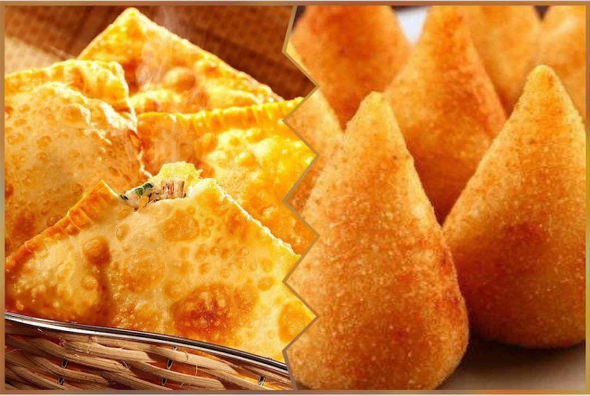

Sobre a Empresa
Bateu aquela fome? Então que tal saborear um delicioso lanche!
Venha fazer seu pedido conosco na LANCHONETE E PIZZARIA RED LEAF, em nosso
estabelecimento, ou se preferir delivery, sem se preocupar em
sair de casa.
Estamos localizados em Guamiranga, fazemos entregas apenas em
nosso município, seja na cidade ou no interior.
Qualidade e eficiência nos produtos e entregas.
O Que Fornecemos:
Diversos sabores de pizzas, rodízios, salgados e também espetinhos.

Sabores de nossa pizzas
AMERICANA: essa pizza é composta por molho de tomate, muçarela, ovos
fatiados e bacon.
CALABRESA: O recheio é preparado com queijo, molho de tomate, calabresa em
rodelas, cebola, tomate picado, azeite e orégano. A azeitona também pode ser
acrescentada!
CORAÇÃO: Um clássico aqui no Sul, a pizza é feita com queijo muçarela,
coração de galinha, salsa e cebolinha picada.
FRANGO COM CATUPIRY:A receita costuma levar basicamente queijo muçarela,
frango, catupiry, sálvia e molho de tomate.
MUÇARELA: esse sabor leva nada mais nada menos que o queijo muçarela em abundância,
de tomate fresco, azeitona, rodelas de tomate e orégano!
NAPOLITANA: A receita original deste sabor leva tomate, azeite de oliva,
orégano e alho.

PORTUGUESA: é feita com queijo, azeitona verde ou preta, ovo cozido,
presunto cozido, cebola, ervilha, molho de tomate e azeite. Também há
preparações que são acrescentadas milho verde, pimentão e orégano!
QUATRO QUEIJOS: assim como o nome já diz, essa pizza é preparada com quatro queijos diferentes,
como muçarela, gorgonzola, parmesão e catupiry, por exemplo.
PEPPERONI: é feito com carne de porco, bovina, e gordura temperado com pepperoncino, que
é semelhante à pimenta-malagueta.
PIZZAS DOCES
PRESTÍGIO: O recheio é feito com uma leve camada de muçarela, chocolate ao leite e coco ralado.
Também pode ser acrescentado frutas como morango e cereja.
MISTA:Para os indecisos de plantão, a pizza mista é a solução. O recheio é feito com metade de
chocolate ao leite, e metade de chocolate branco.
CONFETE: Por conta das cores, esse sabor chama a atenção principalmente das crianças. É
preparada com uma leve camada de queijo muçarela, chocolate ao leite e confete.
CHOCOLATE e MORANGO: e essa mistura, é deliciosa!
BRIGADEIRO: o brigadeiro é uma das pizzas mais pedidas e populares.
BANANA NEVADA: O recheio é feito com bananas em rodelas, chocolate branco, açúcar
e canela.
NOSSOS LANCHES
COXINHA-Sabores: frango com catupiry, frango e de costela.
RISOLES-Sabores: carne e o de presunto com queijo.
PASTÉL-Sabores: carne, presunto com queijo e queijo.

PARA ACOMPANHAMENTO
Para acompanhar seu lanche, temos suco, refrigerante e vitamina, de qualquer sabor
que você queira.
QUEM TRABALHA AQUI